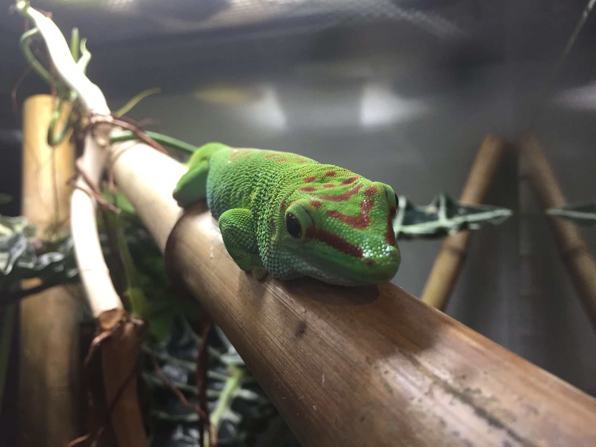
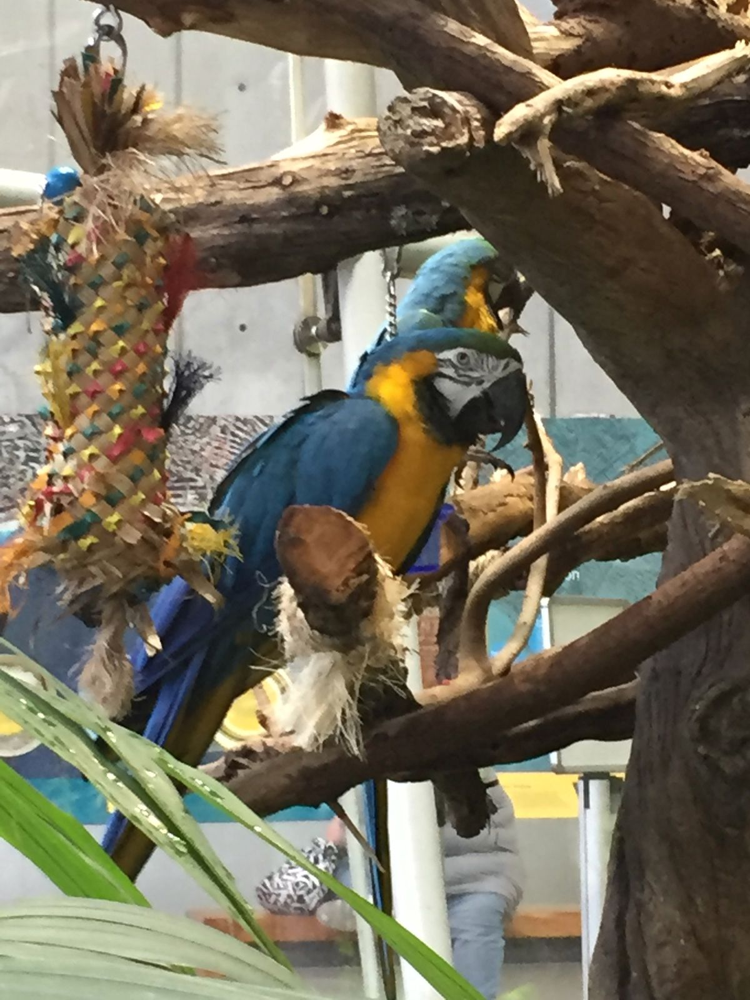
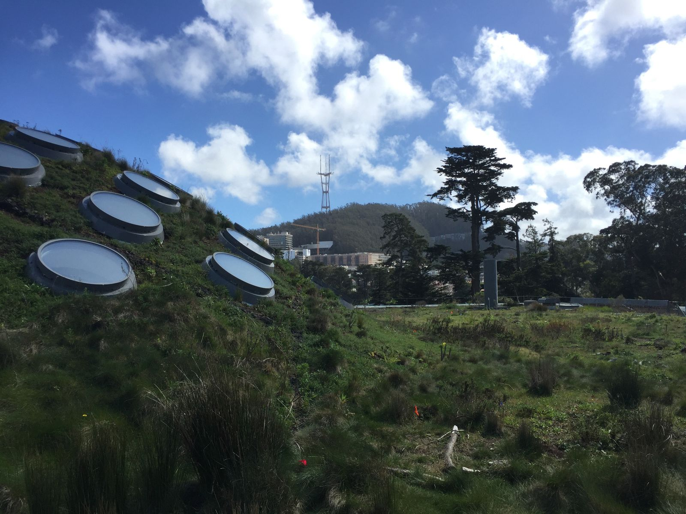
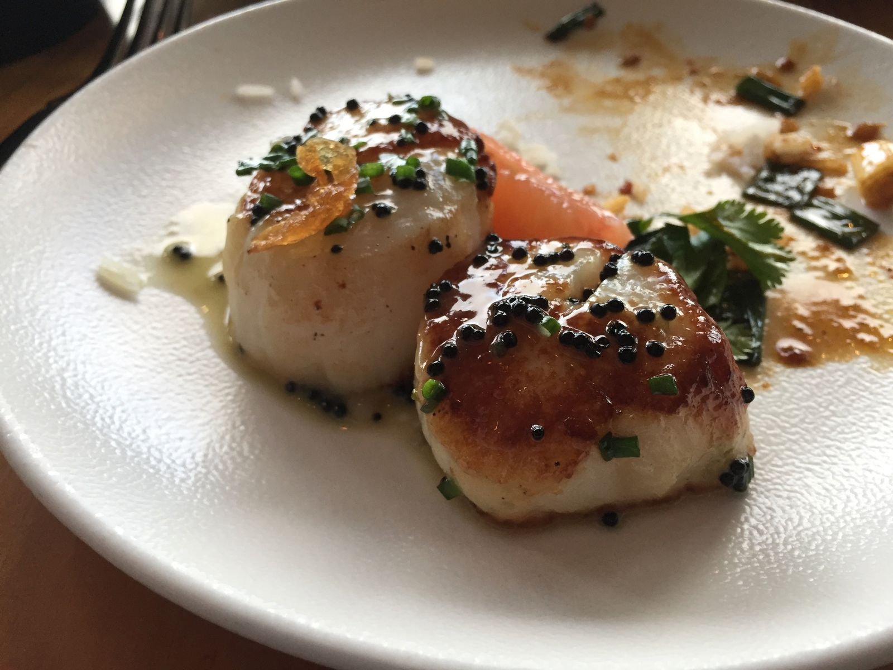
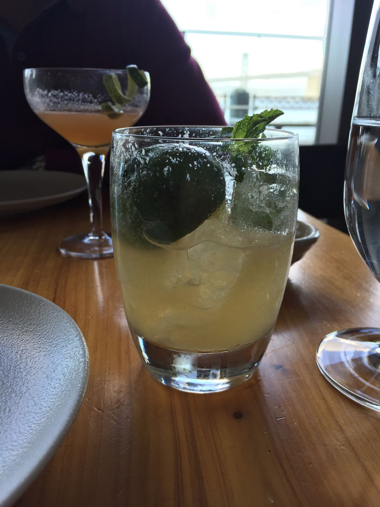
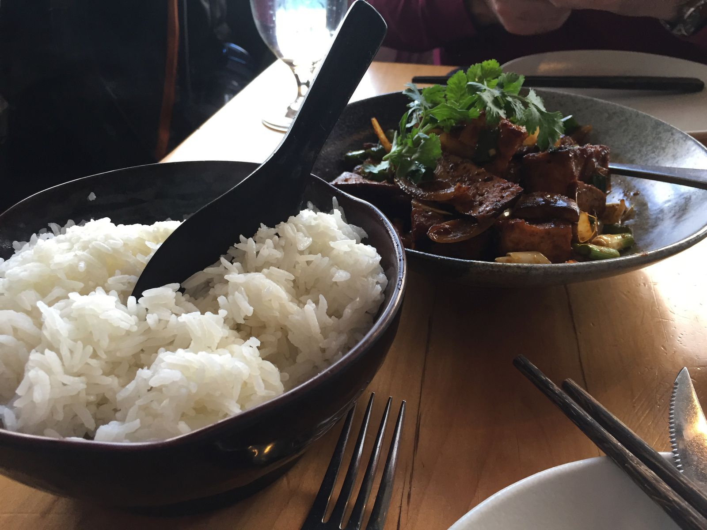
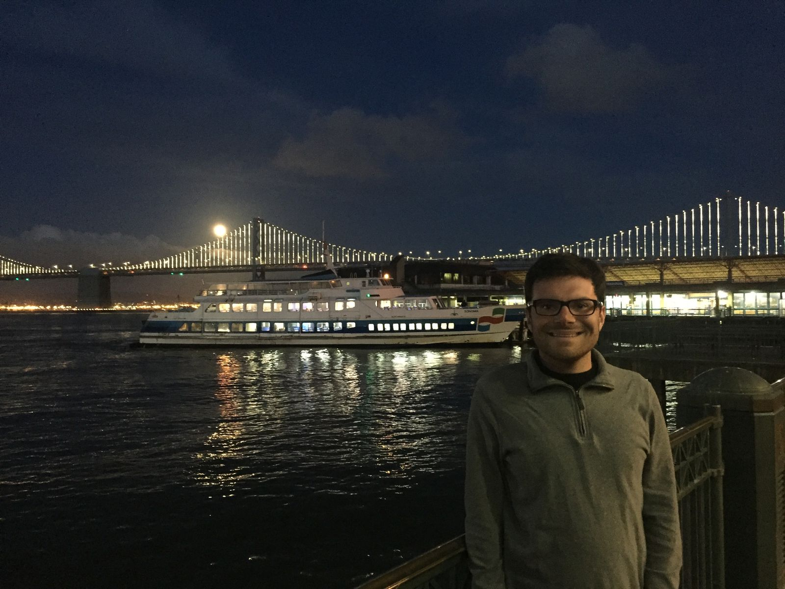

Wrapping up San Francisco
Before departing to Southern California, my dad joined me for a few days in San Francisco and Napa.
Our first day in together in San Francisco revolved mostly around wandering the Embarcadero area and the piers, followed by dinner at Chez Maman, which I had been to once five years earlier.
On the second day, we want to the California Academy of Sciences in Golden Gate Park. In addition to the "Passport to the Universe" planetarium show narrated by Tom Hanks, the museum had a rainforest dome and aquarium.



After we finished at the museum, we went for an excellent dinner at the Slanted Door, a Vietnamese restaurant on the pier recommended by my cousin. The food was all delicious, and they served some of the biggest scallops that I've ever seen.

Scallops 
Rum cocktails 
Tofu and rice
To end the night, we got a great view of a nearly full moon above the Bay Bridge. If I look uncomfortable in this pictures, it is because I am very cold. San Francisco appears to change weather by hour and by block. Dress in layers.
